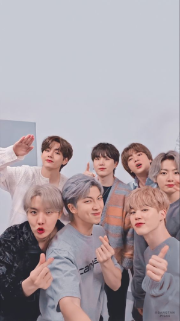
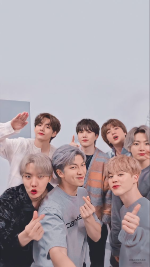

BTS hace unos años significaba, para los angloparlantes, Behind the Scenes, es decir, Detrás de las escenas. Ahora, hables el idioma que hables, significa Bangtan Sonyeondan, o lo que es lo mismo, "Boy Scouts a prueba de balas". El grupo masculino fue formado entre los años 2010 y 2013 por la compañía Big Hit Entertainment. Debutó en 2013 con la canción No More Dream, ganando ya por entonces el premio a Nuevo Artista del año en los Melon Music Awards, los Golden Disc Awards y los Seoul Music Awards. Es decir, en todos los premios importantes del Corea del Sur. Pero mucho ha llovido desde ese 2013 y fue a partir de 2017 con Love Yourself: Her, cuando BTS comenzó a topar las listas internacionales. El resto, como se suele decir, es historia, una en la que han acabado de explotar con hits totalmente en inglés como Butter o Permission to Dance que han rendido occidente a sus pies. Pero los Army, (su ejército de fans), no solo se enorgullecen de ellos por sus ventas de discos y millones de reproducciones. Son la personificación física de la expansión de la cultura coreana (y asiática en occidente), un ejemplo de lucha contra la discriminación racial, embajadores de UNICEF desde 2018... Son, como la revista Time aseguró en su portada de 2018, los "líderes de la nueva generación". Los hemos visto recreando El juego del calamar, en los AMAs de 2021 junto a Coldplay, bailando en la ONU, en su Tiny Desk e incluso en el Carpool Karaoke de James Corden. Por todo eso y mucho más, ya va siendo hora de que conozcas a sus 7 integrantes.
Rm
Jin
Suga

J Hope
Jimin
V

Jungkook